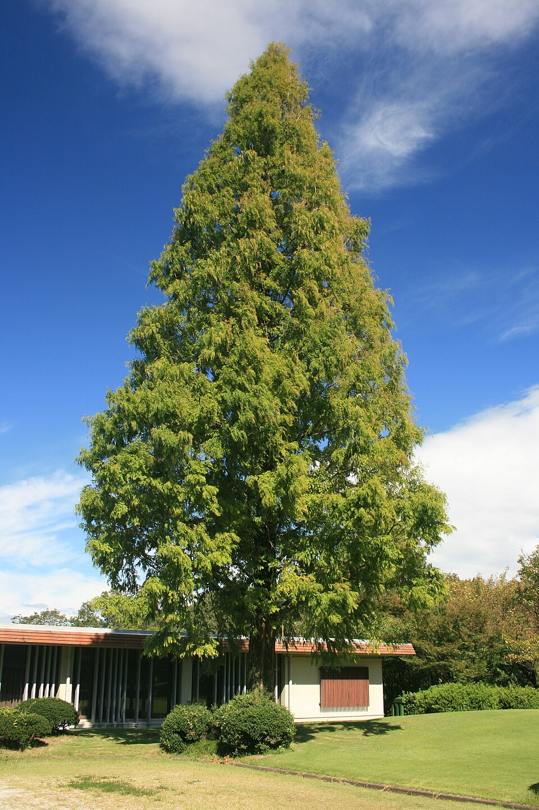
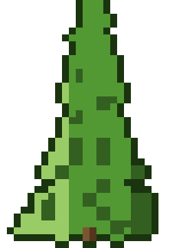

Metasequoia — Dawn Redwood (Watercypres)
A ghost from the Cretaceous who refused to go extinct, the Dawn Redwood charges into battle with prehistoric mass and serene indifference to everything that has died around it for 50 million years.
Combat flavor
Ultra-light wood paradoxically pairs with legendary bulk (huge max height, ancient lineage) — a slow, titanic guardian with surprising rot-resistance as a passive shield trait. Its living-fossil status could fuel a "Time Warp" ability freezing an enemy's buffs.
Real-world facts
Typical / max height25–40 m typical; up to 51 m recorded in the wild
LifespanEstimated 600+ years under favorable conditions; lineage as a genus spans ~50 million years — textbook living fossil
WoodAir-dry density ~280 kg/m³ — exceptionally light even for a softwood; too low density for structural use, but heartwood shows surprisingly high natural durability (outlasting Scots pine and Douglas-fir in durability tests)
Growth speedFast (can exceed 1 m/year in youth; one of the fastest-growing conifers)
Ecology / notable traitsLiving fossil — modern form identical to Cretaceous ancestors; deciduous conifer (unusual); wild population restricted to ~5 km² in Hubei/Hunan, China — globally endangered (IUCN Critically Endangered in the wild); widely planted worldwide; tolerates wet, flooded soils; buttressed base in age
Gallery

